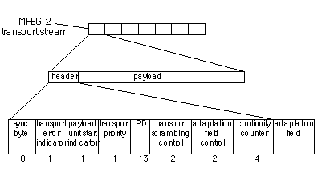
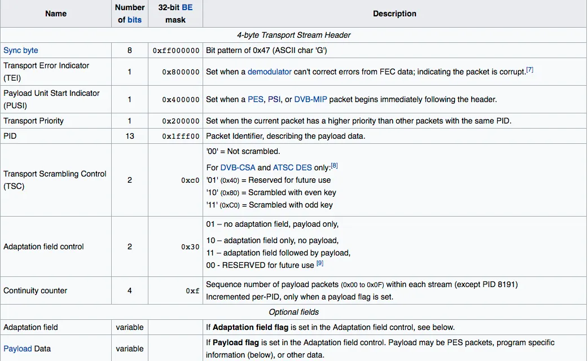

HTTP Live Streaming
Abstract |
HTTP Live Streaming |
Authors |
Walter Fan |
Status |
WIP as draft |
Updated |
2024-08-21 |
简介
A streaming protocol specifically dictates how streaming media is broken up and transmitted across a network.
HTTP Live Streaming (HLS)
Real-Time Messaging Protocol (RTMP)
Real-Time Streaming Protocol (RTSP)
WebRTC
Secure Reliable Transport (SRT)
video streaming 协议回顾
RTMP: Adobe 公司为 Flash 播放器和服务器之间音频、视频和数据传输开发的协议。
HTTP-FLV: Adobe 公司推出, 将音视频数据封装成 flv, 然后通过 http 协议传送给客户端。
HLS (全称: Http Live Streaming): 采集推流端将视频流推到流媒体服务器时, 服务器将收到的流信息每缓存一段时间就生成一个新的 ts 文件, 同时建立一个m3u8的文件来维护几个最新的 ts 文件索引, 会时时更新 m3u8 索引文件内容, 所以当播放端获取直播时, 从 m3u8 索引文件里面获取的播放 ts 视频文件片段都是最新的, 保证用户在任何时间进直播都能看到较新内容, 近似直播体验。
DASH: 也叫 MEPG-DASH, 是可以发送动态码率的直播技术, 借助 MPD 将视频分割成多个切片, 每个切片都有不同的码率; DASH 客户端会根据自己网络情况选择一个码率进行播放, 是类似 HLS 的一种技术。
FMP4: mp4 本身数据结构是 box 嵌套 box, 所以不能只下载某个小段视频播放, 因为 meta 信息不完善, 依赖于外层 box 的 meta 信息, 所以普通的 mp4 视频只能把整个索引文件下载下来然后用户才能播放, 短视频还好, 遇到长一些的视频, 比如电视剧和电影等, 索引文件特别大, 导致首帧视频时常很长, 给用户卡顿的感受, 所以出了 fmp4 这种格式, 然后每个小段视频格式都是独立的一个数据包, 符合流的数据格式规定, 不用下载整个索引文件, 只需要下载视频片段的相应小索引文件就能播放, 减少了用户的等待时间
HLS
HTTP Live Streaming (也称为HLS) 是由Apple Inc.开发并于2009年发布的基于HTTP的自适应比特率流通信协议。对协议的支持在媒体播放器、Web 浏览器、移动设备和流媒体服务器中广泛存在。截至 2019 年, 一项年度视频行业调查一直发现它是最受欢迎的流媒体格式。
HLS类似于MPEG-DASH, 因为它通过将整个流分解为一系列基于HTTP的小型文件下载来工作, 每个下载一个整体潜在无限传输流的一小块。以不同比特率编码的可用流列表使用扩展的 M3U 播放列表发送到客户端。
基于标准 HTTP 事务, HTTP 实时流可以遍历任何允许通过标准 HTTP 流量的防火墙或代理服务器, 这与基于 UDP 的协议 (如 RTP) 不同。这也允许从传统的HTTP服务器提供内容, 并通过广泛可用的基于HTTP的内容交付网络交付内容。该标准还包括一个标准的加密机制和使用HTTPS的安全密钥分发, 它们共同提供了一个简单的DRM系统。该协议的更高版本还提供技巧模式快进和快退以及字幕的集成
HLS 是新一代流媒体传输协议, 其基本实现原理为将一个大的媒体文件进行分片, 将该分片文件资源路径记录于 m3u8 文件 (即 playlist) 内, 其中附带一些额外描述 (比如该资源的多带宽信息···) 用于提供给客户端。客户端依据该 m3u8 文件即可获取对应的媒体资源, 进行播放。
详情参见
metadata file
m3u8
#EXTM3U
#EXT-X-TARGETDURATION:10
#EXTINF:9.009,
http://media.example.com/first.ts
#EXTINF:9.009,
http://media.example.com/second.ts
#EXTINF:3.003,
http://media.example.com/third.ts
media file
mpeg2-ts
fMP4
mpeg-ts
ts文件为传输流文件, 视频编码主要格式 h264/mpeg4, 音频为 acc/mp3。
ts文件分为三层:
ts 层Transport Stream、
ts 层就是在pes层加入数据流的识别和传输必须的信息
ts 流: 由定长的TS包组成 (188字节) , 而TS包是对PES包的一个重新封装 (到这里, ES经过了两层的封装) 。应用于相对有错环境下的传输与存储 (如DVB中) , 其基本单位是TS包, 长度固定188字节。日本的DVB-S广播系统采用192个字节的TS包, 美国采用204个字节的TS包, 多加了16个字节的前向纠错校验码 (FEC) 。
pes 层 Packet Elemental Stream、
pes 层是在音视频数据上加了时间戳等对数据帧的说明信息,
pes 流: PES流是ES流经过PES打包器处理后形成的数据流, 在这个过程中完成了将ES流分组、打包、加入包头信息等操作 (对ES流的第一次打包) 。PES流的基本单位是PES包。
es 层 Elementary Stream.
es 层就是音视频数据,
es 流: 有三种, 图像数据流, 音频数据流, 以及其他编码数据流。
mpegts 文件结构如下
mpegts 文件头字段如下
The Sync Byte (0x47) marks the beginning of each MPEG-2 transport stream (TS) packet, serving as a synchronization indicator for packet boundaries.
The PID (Packet Identifier) field within each TS packet identifies the type of payload contained in the packet. Different PID values correspond to various components of the transport stream:
PID 0x0000 points to the Program Association Table (PAT), which lists all programs and their corresponding Program Map Table (PMT) PIDs.
PID 0x0010 points to the Network Information Table (NIT), providing network-related information and descriptors.
PIDs obtained from the PAT point to the PMT, which lists all elementary streams (audio, video, etc.) for a specific program.
PIDs obtained from the PMT point to the actual elementary streams carrying audio, video, or other data.
The Program Association Table (PAT) is a vital component of the MPEG-2 transport stream. It lists all programs available in the stream along with the PID of their respective Program Map Tables (PMTs).
The Program Map Table (PMT) contains detailed information about the elementary streams associated with a specific program. It lists all elementary streams, such as audio and video streams, along with their corresponding PIDs.
The Network Information Table (NIT) provides network-related information and descriptors within the MPEG-2 transport stream. It includes details about the network structure, service providers, and other relevant information.
Elementary Streams within the MPEG-2 transport stream contain the actual audio, video, or other data transmitted over the network. These streams are identified by their PIDs and are crucial for decoding and playback of multimedia content.
Protocols Enhancement
LL-HLS: Low-Latency HTTP Live Streaming
LL-DASH
LAS: HTTP FLV
Implementation
Nginx RTMP module
Performance
HLS may have 10s above delay, need low latency HLS
mp4 –> hls.m3u8 + ts
mp4
normal mp4
fast start noraml mp4
fragment mp4
Reference
HTTP Live Streaming: https://datatracker.ietf.org/doc/html/rfc8216